ELISA ROMÁN
MAYO 25, 2021
La mayoría de nosotros nos asociamos a través de nuestro teléfono inteligente durante al menos dos horas al día. Esto puede aumentar eficazmente el peso de la cabeza hasta en 27 kg, dañar su postura, y si envía mensajes de texto mientras camina, exponerlo a todo tipo de accidentes.
Se espera que el número de usuarios de teléfonos móviles en todo el mundo supere los 5.000 millones este año. La penetración móvil seguirá creciendo hasta en un 67%, con China en el objetivo de aportar 1.500 millones de conexiones móviles e India con 1.100 millones. El aumento del crecimiento del mercado móvil puede atribuirse principalmente a la reducción del costo y la disponibilidad de los teléfonos inteligentes.
Los teléfonos móviles son vistos generalmente como esenciales para nuestra vida diaria, con mensajes de texto la forma más común de comunicarse. Groupe Spéciale Mobile Association (GSMA) estima que dos tercios de la población mundial posee un teléfono móvil. En enero de 2018, al menos el 68% de la población mundial tenía acceso a un dispositivo. Se espera que esa cifra alcance el 75% en 2020.
Recomendaciones
Los especialistas en columnas sugieren que mantengas el teléfono a la altura de los ojos, tome descansos regulares de los mensajes de texto y limite el tiempo de pantalla para evitar el dolor. Hay aplicaciones disponibles para enviar alertas cuando el usuario ha estado en una postura mirando hacia abajo durante demasiado tiempo.